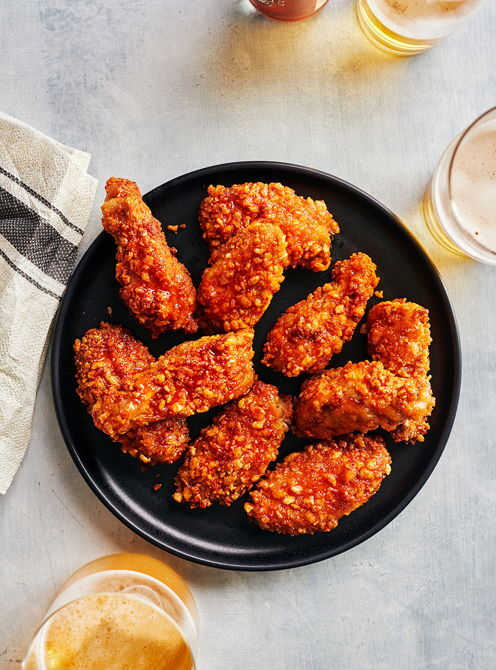

Recettes
Voici deux de mes recettes préférées utilisant le miel
Gâteau renversé aux pommes et au miel
Ingrédients:
- 100 g (1/2 tasse) de beurre
- 200 g (1 tasse) de sucre
- 2 œufs
- 75 ml (1/3 tasse) de lait
- 200 g (1 ½ tasse) de farine à pâtisserie
- 5 ml (1 c. à thé) poudre à pâte
- Vanille au goût
- 100 g (1/2 tasse) de beurre
- 150 ml (2/3 tasse) de miel
- 6 pommes
- 1 jus citron
Préparation:
- Mettez le beurre en crème et incorporez le sucre. Mélangez soigneusement. Incorporez ensuite les oeufs et le lait en 2 fois. Bien mélanger chaque fois.
- Incorporez la farine et la poudre à pâte préalablement tamisées et la vanille. Ne travaillez pas trop la pâte.
- Versez sur les fruits préparés de la façon suivante :
- Faites fondre le beurre dans un moule rond de 23 cm (9 po) de diamètre.
- couvrez uniformément avec le miel et disposez sur le tout des tranches de pommes légèrement mouillées de jus de citron.
- Faites cuire dans un four à 180°C (350°F) pendant 45 minutes. Sortez du four, décollez les bords avec une spatule, retournez le gâteau sur un plat. Laissez reposer quelques minutes et retirez du moule avec précaution.
Pour voir plus, visiter le site des Pommes qualité Québec:
Ailes de poulet piquantes au miel à la friteuse à air chaud
Ingrédients:
Ailes de poulet
- 5 ailes de poulet entières
- 30 ml (2 c. à soupe) de farine tout usage non blanchie
- 2,5 ml (1/2 c. à thé) de sel
- 2,5 ml (1/2 c. à thé) d’assaisonnement au chili
- 2,5 ml (1/2 c. à thé) de paprika fumé
- 2,5 ml (1/2 c. à thé) de poudre d’oignon
- 1 oeuf
- 30 g (1 tasse) de céréales de riz croquant de type Rice Krispies, légèrement écrasées
Sauce
- 30 ml (2 c. à soupe) de miel
- 30 ml (2 c. à soupe) de sauce piquante de type Frank’s RedHot
- 5 ml (1 c. à thé) d’huile de sésame grillé
Préparation:
Ailes de poulet
- Sur un plan de travail, couper les ailes de poulet à la jointure de façon à obtenir trois morceaux. Composter le petit bout et ne conserver que les deux autres morceaux. Bien assécher avec du papier absorbant.
- Dans une assiette creuse, mélanger la farine, le sel et les épices.
- Dans une autre assiette creuse, battre légèrement l’oeuf.
- Dans une troisième assiette, placer les céréales écrasées.
- Enrober un morceau d’aile de poulet à la fois dans le mélange de farine.
- Secouer pour en retirer l’excédent.
- Tremper le poulet dans l’oeuf et égoutter légèrement.
- Enrober de céréales en pressant légèrement.Congeler à cette étape, si désiré .
- Placer les ailes de poulet dans le panier de la friteuse à air chaud (air fryer).
- Cuire à 190 °C (375 °F) 15 minutes.
- Retourner les ailes de poulet et poursuivre la cuisson 5 minutes ou jusqu’à ce qu’elles soient bien dorées.
Sauce:
- Entre-temps, dans un grand bol, mélanger tous les ingrédients.
- Déposer les ailes de poulet dans le bol avec la sauce et bien les enrober.
- Servir aussitôt.

Pour voir plus, visiter le site de Ricardo: